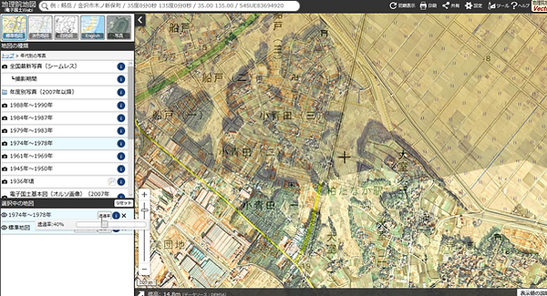

地理院地図
防災に役立つ地理院地図へのリンクと情報です。
国土交通省･国土地理院の「地理院地図」です。
小青田地域はもちろん、日本全国の現在の地図と、同じ場所の昔の写真を重ね合わせて見ることができます。
これにより、土地の成り立ちや災害のリスクを認識でき、防災にも役立つアイテムです。 あなたのご自宅がかつてどんな場所だったか、確認してみましょう。
簡単に使い方手順の説明です
- 国土地理院のサイトを開きます。
- 見たい場所の地図を表示します。
- 左上の「地図」アイコンをクリックします。
- メニューの「年代別の写真」を選びます。
- 年代をひとつ選んで標準図と重ね合わせるか、ふたつ選んでの写真を重ねられます。
- 左側メニューの下、「選択中の地図」に選んだ年代が出ます。
- 年代横の「透過率」のボタンで濃淡調整ができます（スマホではON/OFF切替）。
小青田地域は写真の縦ぎ目になってしまい、黒い帯で表示されない場合があります。
おすすめは「1974年〜1978年」です。
おすすめは「1974年〜1978年」です。
早速、使ってみましょう！
ご自身の住んでいるところが、かつてどんな土地だったのか。これをみればすぐにわかります。 「堤防跡や河原跡って、ホントにこんな昔からあったんだね！」など、 近隣の歴史を知ることは、自分たちの地域をしっかりと認識すること。とても大切なことですね。
すぐに地理院地図を見る